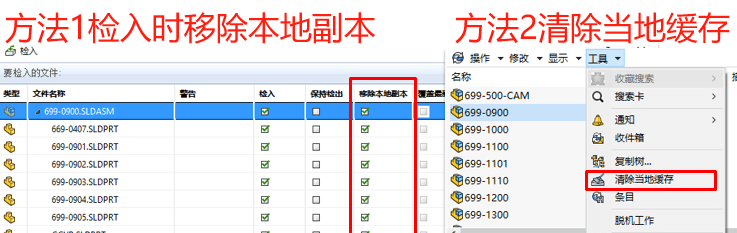

SOLIDWORKS-PDM性能测试

工具
graph LR PDM_report-->B1-->B2
PDM report：查看SOL服务器 / PDM库配置，查看PDM性能/PDM使用历史数据
SW Log Parser：分析SOL服务器默认扩展事件system_health 中的死锁及等待事务
SOL studio：修改SOL服务器配置设置SOL服务器维护排程|设置扩展事件
SQL：收集SOL服务器跟踪，用于分析短时间内可重现的性能问题
Windows 系统性能检测：收集系统性能数据，用于分析服务器硬件瓶颈及SOL优化方向
processexplorer收集应用进程：收集应用程序进程数据，用于分析客户端登录慢问题
硬件检测工具：
ATTO Disk Benchmark：测量硬盘读写速度
PingPlotter：：测量客户端到服务器之间每个节点的网络延迟及稳定性
iPerf3：测量客户端到服务器之间的带宽
Wireshark：网络抓包工具，用于分析VPN或者其他网络相关的性能问题
方法
软件升级
SQL调优
业余时间索引重组
并行的开销阈值
PDM配置调优
硬件升级
其他
清除缓存
掌握管理当地缓存的方法：当用户获取文件库中的一个文件时,文件的副本将会被加载到本地视图中.从计算机资源以及性能方面考虑,用户应该管理当地缓存并将不需要的文件从本地清理.
•移除本地副本
•清理当地缓存
检入慢-缓存影响
原理：
检入检出和变更状态在PDM运行逻辑就是将SQL表内的相关列值信息做更新，在多个表内插入或新建新版本的所有记录和列值，然后将所有新产生的新版本物理文件上传到存档服务器内的0-F目录内，并更新对应的index.xml文件。
在某些情况下，如果所处理的库包含许多本地缓存和检出的文件夹和文件，即使检入单个文档，也可能需要很长时间才会显示“检入”对话框。通常，仅当用户以特定用户身份登录到特定计算机上的库时，才会出现这些情况。
要核实的一点是：SOLIDWORKS® Professional PDM 应用程序如何在检入期间定义父工程图的处理。默认情况下，检入操作将扫描所有缓存的文件夹，以便将可能的父工程图纳入检入。检入非 SOLIDWORKS 文件时，也可能会发生该问题。根据客户端计算机上当前缓存文件夹的结构，此扫描可能会增加大量开销，导致在出现“检入”对话框之前长时间延迟。
要验证设置：
在 SOLIDWORKS PDM 管理工具中，右键单击“用户”，然后单击“设置”。
在“检入”部分中，停用“在整个库中查找工程图”选项，然后重试检入。
优化
SQL数据库的事务日期清理
ldf(分离/附加)

附加

存档服务器根目录0-F迁移
停止存档服务移动
0-F存档库中需要更换路径的文件夹
1 | 计算机\HKEY_LOCAL_MACHINE\SOFTWARE\SolidWorks\Applications\PDMWorks Enterprise\ArchiveServer\Vaults\<库名>\ArchiveTable\ |
修改ArchiveTable的16个键值路径
启动存档服务
冷存储不需要的文件版本
删除版本
移动版本
重启存档服务器服务
保留版本数
保留修订版
避免在工作时间内运行计划
删除文件库中的空目录和无用文件数据
删除文件库中的空目录和无用文件数据
- 减少SQL数据库中的Documents/Projects和其它关联表的数据量
适当减少多余重复的流程通知
适当减少多余重复的流程通知
- 组/用户文件夹通知
- GroupProjectNotification
- UserProjectNotification
销毁已删除文件和文件夹
销毁已删除文件和文件夹
- 勾选包括子文件夹
- 遍历查询SQL数据库
- 务必在下班时间操作